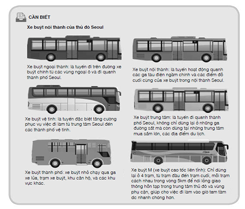

Bọn họ không đáp xuống biển, mà là xuống bãi cát xám xịt như đá granite nghiền. Nam nhân ngư than phiền rằng mấy cái vảy của hắn bị ngứa, còn Lelou thề rằng ma thuật làm móng tay lão dài ra, nhưng những dấu vết trên cát còn quá mới đến nỗi một hoàng tử cũng có thể xoay xở để lần theo chúng. Nerron để mặc Louis với trò vui của mình cho đến ngã tư đường đầu tiên, nơi những dấu vết dưới mắt một kẻ không thông thạo mất hút giữa những dấu bánh xe ngựa. Với Nerron những dấu chân ấy còn dễ đọc hơn những bảng chỉ dẫn bên vệ đường. Reckless đã đến St. Riquet, một thị trấn nhỏ nơi trước đây cư dân của nó vẫn thường xuyên bị người khổng lồ giẫm nát. Người ta vẫn còn tìm thấy răng khổng lồ trong những cánh đồng xung quanh. Ngà voi có giá cao ngất ngưởng.
Không quá khó để tìm ra Reckless và Cáo đang trú trong nhà nghỉ nào. Lão Bọ, với khuôn mặt vô tội của mình, thậm chí còn khiến bà chủ quán trọ đưa số phòng cho bọn họ.
“Chúng ta còn chờ gì nữa?” Louis hỏi, trong lúc nam nhân ngư với khuôn mặt không chút biểu cảm chăm chú nhìn những khung cửa sổ treo màn. “Bắt tên gián điệp ấy đi.”
“Để hắn kịp hủy hoại cái thủ cấp ngay khi chúng ta bước qua cửa sao?” Nerron nôn nóng vẫy họ ra sau một chiếc xe ngựa đậu bên lề đường. “Chúng ta phải dụ hắn ra ngoài!” gã rít lên. “Với một miếng mồi ngon.”
Lelou ném cho gã một cái nhìn sắc lẻm.
Ồ, sẽ khó khăn đây, Nerron. Nhưng gã phải rũ được ba kẻ này trong vài giờ. Reckless là của gã. Ngoài ra gã cũng không định nhìn cái thủ cấp lủng lẳng trên thắt lưng vô duyên của Louis.
“Chúng ta cần một thiếu nữ,” gã thì thầm với cả bọn. “Nhưng tôi nghe được rằng hắn chỉ thích trinh nữ. Tóc vàng. Cao nhất là mười tám tuổi.”
Lelou chỉnh lại kính. Đó luôn luôn là một biểu tượng cảnh báo. “Trinh nữ? Đó không phải miếng mồi quen thuộc để dụ kỳ lân sao?” lão nói giọng mũi.
“Lão định dạy tôi cách săn kho báu đấy à?” Nerron quát tháo. “Nhưng tôi chắc chắn là ông cũng hiểu rõ những gián điệp ở Albion như hiểu rõ lịch sử dòng họ Louis!”
Lão Bọ muốn đáp trả gì đó, nhưng Louis cảm thấy nhiệm vụ mới của hắn nghe thật hấp dẫn, như Nerron mong đợi.
“Ta sẽ tìm cho gã Goyl một trinh nữ.” Hắn nở một nụ cười tự mãn, đúng kiểu một hoàng tử. “Nhưng sau đó thủ cấp cũng là của ta.”
Lelou mím cặp môi mỏng dính lại, còn Eaumbre ném cho Nerron một cái nhìn hiểu biết, trước khi đi theo Louis, chỉ vài phút sau cả ba người bọn họ đã biến mất sau một con hẻm nhỏ, và giờ đây Jacob Reckless chỉ còn cách gã một cú ném đá.
Nerron nấp trong một lối vào đối diện quán trọ, nhưng nhiều lần gã phải đổi chỗ vì một cư dân lương thiện nào đó cứ đứng lại và nhìn chằm chằm vào gã. Gã ước gì mình có một đội kỵ binh Goyl trong con hẻm nhỏ ngái ngủ này khi trông thấy Reckless bước ra khỏi quán trọ với một phụ nữ. Không nghi ngờ gì nữa, màu tóc của cô ta chính là màu của loài cáo. Cô ta thật xinh đẹp, như mọi người vẫn nói - mặc dù Nerron không có hứng thú với phụ nữ người trần. Gã tự hỏi liệu cô ta và Reckless có phải là một cặp không. Còn lý do nào khác để mang một phụ nữ đi cùng trong chuyến đi săn, trừ phi cô ta là một kẻ có khả năng thay đổi hình dạng? Phụ nữ hoặc là không thể nhìn thấu như nàng tiên mà Kamien si mê, hoặc là yếu đuối như mẹ gã, người phụ nữ đã dan díu với một kẻ trong bộ tộc cẩm thạch đen và sinh ra một đứa con lai. Thỉnh thoảng người ta tự thuyết phục rằng mình yêu họ, nhưng người ta không thể tin họ, và cuối cùng cái mà người ta khao khát chỉ là làn da đá thạch anh tím của họ. Gì cũng được... Cáo đánh ngựa về hướng Tây trong khi Jacob lên đường đi về hướng Nam. Tuyệt vời. Mọi việc sẽ đơn giản hơn nếu hắn ta đi một mình.
Con ngựa mà Nerron thuê cũng lo ngại ánh mắt của gã y như những cư dân của St. Riquet, và cho đến khi gã xoay xở ngồi được lên lưng nó thì Reckless đã khuất khỏi tầm mắt. Nerron đuổi kịp khi anh vừa đi vào cánh rừng thế chỗ cho những đồng cỏ và ruộng lúa ở phía Nam thị trấn. Nerron biết ơn những bóng cây, không chỉ vì chúng giúp gã không bị anh phát hiện. Ánh nắng mặt trời không còn làm đau mắt gã nữa, từ khi nó được yểm bùa bởi một kẻ ăn thịt trẻ con, nhưng da gã vẫn nứt nẻ dù được bôi dầu mỗi ngày.
Khu rừng này trước đây là một trong những khu rừng của hoàng tộc, từng là nơi săn bắn của giới quý tộc Lothringen trong một thời gian dài. Từ đó đến nay nó cung cấp gỗ cho các nhà máy và ngành đường sắt, nhưng cây cối vẫn dày đặc trong cánh rừng này như thời xưa, khiến Nerron nhớ tới những cánh rừng đá dưới lòng đất, lấp đầy những hang động kỳ vĩ với nhánh cây từ ngọc thạch lựu và lá bằng đá khổng tước, thứ đá gã mang vân trên da.
Gã chỉ rút ống thổi đạn ra khi Reckless đi sâu vào giữa những hàng cây. Dây leo mà Nerron nhét vào cái ống thép mỏng đầy những gai nhọn chỉ một Goyl mới có thể chạm vào mà không bị rách da. Dây leo rơi xuống một khoảnh rừng trống mà Reckless đang cưỡi ngựa đi tới, và bắt đầu leo ngay khi chạm đất. Dây leo siết cổ leo rất nhanh. Nhanh hơn sức bất kỳ con mồi nào có thể chạy thoát.
Reckless ghìm cương ngựa khi nhận ra cái gì đang bò về phía anh. Anh muốn quay đầu lại, nhưng dây leo đã quấn xung quanh móng ngựa. Chúng bấu vào quần áo và cuộn quanh cánh tay anh trong khi con ngựa lồng lên kinh hoàng, anh suýt bị nó giẫm nát khi đám dây leo kéo anh khỏi yên ngựa. Cẩn thận! Nerron muốn bắt sống anh.
Gã cột ngựa vào một gốc cây. Con vật ngu ngốc vẫn còn sợ hãi lồng lên trước gã. Ngựa của Reckless đã thoát khỏi đám dây leo. Nó phi nước kiệu về phía gã, chảy máu và run rẩy khi gã bước lên con đường mòn. Nerron bắt con ngựa lại và thò tay vào ba lỗ treo trên yên ngựa. Cái thủ cấp được giấu trong một chiếc túi-giấu-đồ. Đương nhiên rồi. Chỉ có dân nghiệp dư mới để kẻ khác trông thấy chiến lợi phẩm mang theo bên mình.
Không còn thấy bóng dáng Reckless đâu nữa. Đám dây leo bao bọc anh với một cái kén đầy gai. Nerron kéo chúng ra cho đến khi gã thấy được khuôn mặt đối thủ của mình. Reckless đã bất tỉnh. Dây leo siết cổ làm ngạt thở nạn nhân của chúng quá nhanh, nhưng anh mở mắt ra khi bị Nerron tát vào mặt.
Nerron giơ cao chiếc túi-giấu-đồ. “Cảm ơn nhiều! Ta thật sự rất vui khi không phải đi tàu. Ngươi nghĩ ta có thể tìm được quả tim ở đâu nào?” Reckless cố đứng thẳng dậy dù những gai nhọn của đám dây leo vẫn đâm vào da thịt anh. Bầy sói sẽ ngửi thấy mùi máu anh nhanh thôi. Có một bầy sói khét tiếng trong khu rừng này, chúng rất quen thuộc với mùi thịt người vì được một quý tộc địa phương nuôi bằng thịt những kẻ thù của ông ta.
“Kể cả nếu ta biết - tại sao ta phải nói cho nhà ngươi biết chứ?” Đôi mắt xám nhìn gã cảnh giác, nhưng không có nhiều sợ hãi trong đó. Đó là những gì người ta nói về anh: Reckless không sợ hãi bất kỳ điều gì. Anh ta nghĩ mình bất tử.
Nerron cột chiếc túi-giấu-đồ vào thắt lưng.
“Nếu ngươi nói cho ta biết, ta sẽ giết ngươi trước khi ngươi bị bầy sói ăn thịt.”
Ồ không, anh có sợ hãi chứ, dù anh rất giỏi che giấu điều đó. Nhưng anh mặc kệ. Thật đáng ngưỡng mộ. Nerron căm ghét sự sợ hãi. Sợ nước. Sợ những kẻ khác. Sợ chính mình. Gã chiến đấu với nỗi sợ hãi bằng cơn thịnh nộ của mình, nhưng chỉ càng làm nó lớn mạnh thêm mà thôi, như một con thú được cho ăn.
“Ta đã có bàn tay rồi,” Gã không giấu nổi một chút huênh hoang. Gã đã phải nghe về những chiến công lẫy lừng của Jacob Reckless quá nhiều rồi.
“Tuyệt vời.” Khuôn mặt đối thủ của gã trắng bệch vì đau khi cố đứng dậy lần nữa. “Nếu vậy ta có thể ăn cắp nó khỏi tay nhà ngươi khi ta lấy lại được cái thủ cấp”
“Thật sao?” Lần này Nerron mang đôi găng tay đã bảo vệ hẳn khỏi nhiều bùa chú hắc ám. Dù vậy cơn đau vẫn dâng lên đến tận vai gã khi gã lôi cái thủ cấp ra khỏi chiếc túi. Đôi mắt nhắm lại, nhưng cái miệng vẫn hơi há ra, Nerron vội vàng nhét cái thủ cấp trở lại túi trước khi nó có thể nói gì đó. Kể cả một phù thủy đã chết có thể vẫn ngậm một lời nguyền trên lưỡi.
Gã nhét chiếc túi-giấu-đồ vào túi áo khoác. Lớp da kỳ nhông của nó hẳn sẽ bảo vệ làn da người trần của Reckless tốt hơn loại vải dùng may áo anh. Mềm và dễ rách y như da anh. “Trước khi tất cả ý thức của ngươi bị chó sói tiêu hóa mất... Làm thế nào ngươi xoay xở lấy được chiếc mũ đỏ từ mụ ăn thịt trẻ em ở Moulin hả? Người ta nói mụ đã bỏ ngươi vào lò nướng rồi mà.”
“Ta sẽ nói cho ngươi biết nếu ngươi nói cho ta biết làm thế nào ngươi tìm được con sáo trắng. Ta đã tốn hàng tháng trời đi tìm nó.” Reckless cố giải phóng một bàn tay, nhưng dây leo siết cổ là thứ dây trói đáng tin cậy. “Có thật tiếng hót của nó làm ngươi trẻ lại không?”
“Đúng, nhưng tác dụng chỉ khoảng một tuần. Khách hàng của ta đã trả tiền trước khi hắn phát hiện ra điều đó.” Nerron xoa xoa làn da nứt nẻ. Thậm chí trong bóng cây làn da cũng làm gã đau đớn. Khi cuộc tìm kiếm này kết thúc, gă khẩn thiết cần ở một vài tháng dưới lòng đất. Nhưng vẫn còn một câu hỏi mà gã muốn đặt ra.
Gã rút con dao ra.
“Chỉ là tò mò thôi... Ta hứa ngươi sẽ mang câu trả lời xuống mồ, hay tốt hơn là, vào bụng chó sói. Ngươi giấu đứa em da ngọc thạch của mình ở đâu?”
À há. Thì ra vẫn có một con đường đi qua lớp mặt nạ tự tin ấy.
“Will. Tên của nó, đúng không?” Nerron cúi xuống người tù nhân của gã và cắt một cành non trong đám dây leo đang cuốn quanh cái cổ mềm của anh. Luôn có cách để dùng lại dây leo siết cổ. “Ngươi có biết bộ tộc cẩm thạch đen đã cử năm gián điệp giỏi nhất của họ để truy tìm hắn ta không?”
Ánh mắt Reckless dõi theo từng động tác của gã. Anh đã lấy lại được tự chủ, nhưng đôi mắt người trần dễ làm lộ chân tướng chủ nhân chúng hơn mắt của người Goyl nhiều. Vẻ cảnh giác trong đôi mắt tố cáo điều anh cố phủ nhận bằng sự im lặng. Đúng vậy, tin đồn là sự thật: người Goyl ngọc thạch, người đã cứu làn da đá của Kami'en, chính là em trai của Jacob Reckless.
“Nó ở đâu?” Nerron gói cành non vừa cắt vào chiếc khăn vẫn còn dính vài gai nhọn của đám dây leo cũ. “Với số bạc mà bộ tộc cẩm thạch đen đã bỏ ra để truy tìm hắn, cả hai người chúng ta có thể mua được cả một tòa lâu đài ở Lutis, dù vậy tới nay họ vẫn chẳng phát hiện ra được một dấu vết nào của hắn. Đó hẳn phải là một nơi rất lạ thường để lẩn trốn.”
Reckless mỉm cười. “Có lẽ ta sẽ nói cho ngươi biết nếu ngươi nhổ đám gai khỏi người ta.”
Ồ, Nerron thấy thích anh - trong chừng mực mà gã có thể thích một người nào đó. Cảm giác này gần như hiếm khi dâng lên trong gã. Mẹ gã là người duy nhất gã thể hiện tình yêu thương rõ ràng. Tình yêu là thứ xa xỉ mà người ta phải trả giá bằng quá nhiều nỗi đau.
“Không,” gã nói. “Tốt hơn là không. Giờ đây thật khó mà chịu được đám người cẩm thạch đen. Không thể chịu nổi việc nghĩ đến chuyện gì sẽ xảy ra nếu người Goyl ngọc thạch giúp một người trong số bọn họ đoạt vương miện của Kami'en.”
“Vậy sao?” Reckless nuốt vào một tiếng rên rỉ. Giờ thì da anh có lẽ đã đầy gai nhọn. “Ngươi nghĩ chuyện gì sẽ xảy ra nếu ngươi tìm được cây nỏ cho bọn họ?”
Cố gắng tốt lắm.
Nerron nhét chiếc khăn gói dây leo vào túi. “Khách hàng là bí mật nghề nghiệp của chúng ta, đúng không?” Gã nghe thấy tiếng bầy sói giữa những hàng cây. “Ta cũng không hỏi ngươi đang tìm cây nỏ cho ai đâu.”
Gã mỉm nụ cười cuối cùng với đối thủ của mình.
“Ta thật sự vui khi con đường chúng ta đi giao nhau thế này. Ta chán ốm khi lúc nào cũng phải nghe rằng ngươi là kẻ giỏi nhất trong giới. Chúc may mắn với bầy sói nhé. Có lẽ ngươi sẽ nghĩ về một thứ gì đó. Làm ta ngạc nhiên nào! Bầy sói chẳng chừa lại gì nhiều, và sẽ thật đau đớn khi Cáo dùng cả phần đời còn lại của mình đi tìm nhà ngươi.”
Nerron nhảy lên ngựa khi con sói đầu tiên lẳng lặng đi về phía Jacob. Những con khác sẽ nhanh chóng đến theo, nhưng ngược lại với những thủ lĩnh da cẩm thạch đen, gã không đặc biệt hứng thú với tiếng gào thét đau đớn.
Ngoài ra Louis giờ này chắc hẳn đã tìm được một trinh nữ.